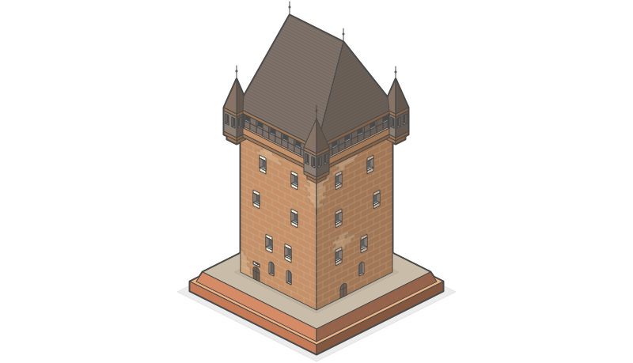
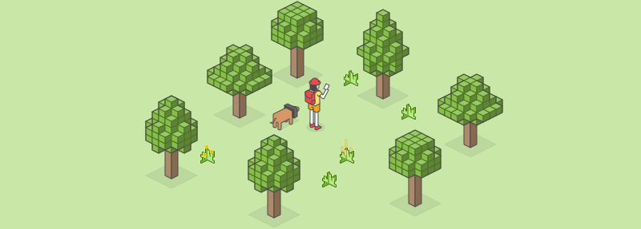
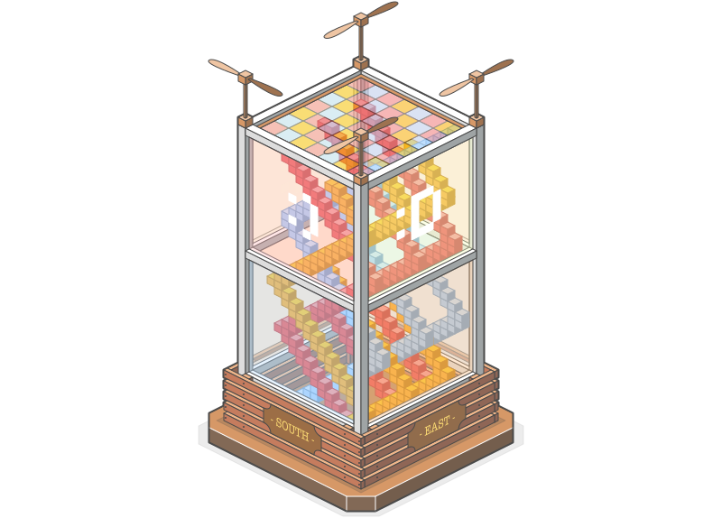
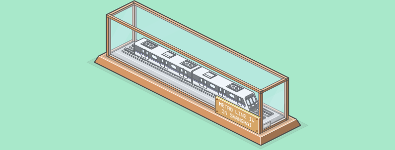
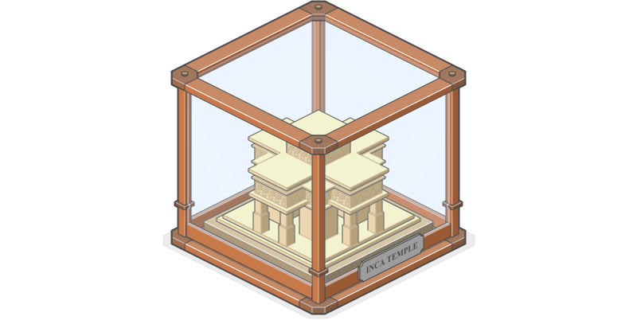
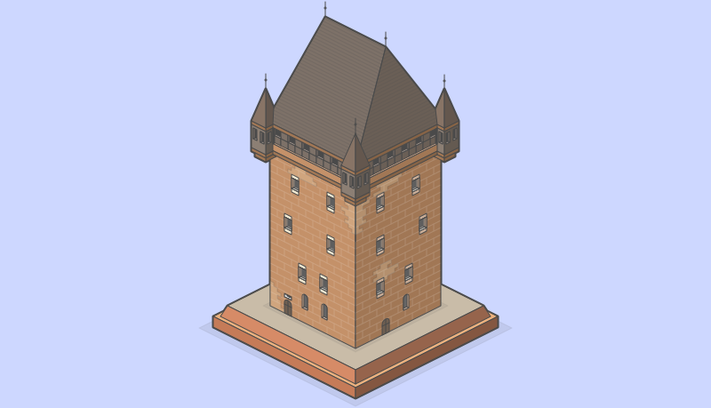

<!DOCTYPE html>
<html lang="en" dir="ltr">
  <head>
    <title>Wenchuan :: Hello world #1</title>
    <link href="https://fonts.googleapis.com/css?family=Source+Sans+Pro:400,600" rel="stylesheet">
    <link rel="stylesheet" href="../css/master.css">
    <link rel="stylesheet" href="../css/responsive.css">
    <link rel="stylesheet" href="../css/special2.css">

    <link rel="icon" href="../media/site-logo.png" type="image/gif" sizes="16x16">

    <script src="../js/master.js"></script>

    <meta charset="utf-8">
    <meta name="viewport" content="width=device-width, initial-scale=1.0, maximum-scale=1, user-scalable=no">

  </head>
  <body>

    <!-- begin nav -->
    <header id="nav">
      <a class="back" href="2-2_in-gallery_visual-design.html"></a>
      <div class="mid">
        Hello world #1
      </div>
      <div class="empty"></div>
    </header>
    <!-- end nav -->

    <!-- begin sidenav -->
    <div id="sidenav" class="sidenav">
      <div class="group head">
        <a href="1-1_home.html">
          <div id="logoAlias"></div>
          <span id="titleAlias">Wenchuan</span>
        </a>
      </div>
      <div class="group">
        <a class="title" href="#">Hello world #1</a>
        <!-- begin sub group -->
        <div class="sub-group">
          <div id="selector"></div>
          <a class="item" href="#begin">
            <div class="selector"></div>
            <div id="sub-group-li-0" class="chapter">Here we go!</div>
          </a>
          <a class="item" href="#bigDiv1">
            <div class="selector"></div>
            <div id="sub-group-li-1" class="chapter">Adventure time!</div>
          </a>
          <a class="item" href="#bigDiv2">
            <div class="selector"></div>
            <div id="sub-group-li-2" class="chapter">Pink-Kikuchiro</div>
          </a>
          <a class="item" href="#bigDiv3">
            <div class="selector"></div>
            <div id="sub-group-li-3" class="chapter">Metro Line 4 (Shanghai)</div>
          </a>
          <a class="item" href="#bigDiv4">
            <div class="selector"></div>
            <div id="sub-group-li-4" class="chapter">Inca temple</div>
          </a>
          <a class="item" href="#bigDiv5">
            <div class="selector"></div>
            <div id="sub-group-li-5" class="chapter">Italian House</div>
          </a>
          <a class="item" href="#bigDiv6">
            <div class="selector"></div>
            <div id="sub-group-li-6" class="chapter">Argo</div>
          </a>
          <a class="item" href="#bigDiv7">
            <div class="selector"></div>
            <div id="sub-group-li-7" class="chapter">Nassauer Haus in Nuremberg</div>
          </a>
          <a class="item" href="#bigDiv8">
            <div class="selector"></div>
            <div id="sub-group-li-8" class="chapter">Flying house</div>
          </a>


        </div>
        <!-- end sub group -->
      </div>
    </div><div id="btn-closeNav" onclick="closeNav()"></div><div id="btn-openNav" onclick="openNav()"></div>
    <!-- end sidenav -->

    <div class="begin" id="begin"></div>

    <!-- begin content -->
    <span id="content">
      <!-- begin article -->
      <article class="big-div next-to-sidenav paddingDiv greyBg">

        <div class="isometricContainer">

          <div class="isometric md">


            <div class="isometricWImg">
              <br><br><br><br><br><br>
              <figure align="center">
                
              </figure>
              <div class="isometricText" style="text-align: center;">
                <br><br>
                <h1>Hello world #1</h1>
                <p>Markus Persson said, "Let there be chunks"; and there were chunks.</p>
                <p>- 2019 -</p>
                <br><br><br><br><br><br>
              </div>
            </div>

            <span class="id" id="bigDiv1"></span>

            <div class="isometricBImg" style="background-color: #C9E8A8">
              <br><br><br><br><br><br>
              <figure align="center">
                
              </figure>
              <br><br><br><br><br><br>
            </div>

            <span class="id" id="bigDiv2"></span>

            <div class="isometricWImg" style="background-color: #ffffff">
              <br><br><br><br><br><br>
              <figure align="center">
                
              </figure>
              <div class="isometricText">
                <h2 style="text-align: center;">Pink-Kikuchiro</h2>
                <p>Sometime, a true Minecraft player, like me, builds silly shaped buildings. They are not for dwelling, defending monsters, transporting, farming. And certainly, They are nothing to do with red stones. They are just wasting your mined materials, and times!</p>
                <p>In my New World (survival mode), this "house" is made by wools. And I call it Pink-Kikuchiro. You can ask me how, but I can't tell you why.</p>
                <br><br><br><br><br><br>
              </div>
            </div>

            <span class="id" id="bigDiv3"></span>

            <div class="isometricWImg" style="background-color: #A8E8CA">
              <br><br><br><br><br><br>
              <figure align="center">
                
              </figure>
              <div class="isometricText isometricWhite">
                <h3 style="text-align: center;">Metro Line 4 (Shanghai)</h3>
                <p style="text-align: left;">To be honest, I hate taking metro, wherever in Shanghai the mega city, or in Milano the dreamlike city. I prefer bus or train if I want to go somewhere, and I am not in a hurry, because when I are on a bus or a train, I can watch the landscape outside.</p>
                <p>In Shanghai, metro L4 is a little bit special metro. Firstly, I had been taking it every day for 2 years. Secondly only a part of it’s route is underground, but sometime you can watch the city landscape, like some tall glass building, badly designed apartment, gardens, some nice and red roof top, or even a shantytown(it’s bad for living, but nice for looking), when it’s carriages emerge to the ground.</p>
                <br><br><br><br><br><br>
              </div>
            </div>

            <span class="id" id="bigDiv4"></span>

            <div class="isometricWImg" style="background-color: #ffffff">
              <br><br><br><br><br><br>
              <figure align="center">
                
              </figure>
              <div class="isometricText">
                <h2 style="text-align: center;">Inca temple</h2>
                <p>In fact, this is a head of an Inca pyramid I found in Wikipedia. And Honestly I know less about Inca civilisation. But still, I like the Minecraft-like shape of the temple.</p>
                <p>Hope enjoy :)</p>
                <br><br><br><br><br><br>
              </div>
            </div>

            <span class="id" id="bigDiv5"></span>

            <div class="isometricWImg" style="background-color: #E1CDFF">
              <br><br><br><br><br><br>
              <figure align="center">
                
              </figure>
              <div class="isometricText isometricWhite">
                <h3 style="text-align: center;">Italian House</h3>
                <p style="text-align: left;">My wife and I spent two weeks in Italy, in Chinese New Year in 2017. The streets in Luca, Venice, and Siena left strong images in my mind.</p>
                <p>The design of this house is not base on any of our journey photos. I still randomly found a house of old fashion in Italy on Google Earth, and “rebuild” it by checking every detail might inspire me—just like what I do in Minecraft. Yeah, still Minecraft ✌️.</p>
                <br><br><br><br><br><br>
              </div>
            </div>

            <span class="id" id="bigDiv6"></span>

            <div class="isometricWImg" style="background-color: #ffffff">
              <br><br><br><br><br><br>
              <figure align="center">
                
              </figure>
              <div class="isometricText">
                <h2 style="text-align: center;">Argo</h2>
                <p>Boys love Argo! She was designed for exploring, whose captain is Jason, the legendary hero accomplished the mission of seeking golden fleece.</p>
                <p>This is a beautiful story from the beginning to the end. In the end, Jason’s wife was burned by his citizens for the accuse of witch; Jason himself was banished. He walked alone the beach to Argos the ship, brought him to the heroic voyage, and cried for his situation. The Argos was too old, and was rotten. A block of wood, a spoken wood, fell down, and hit Jason’s head, fulfilled the hero’s final fate.</p>
                <br><br><br><br><br><br>
              </div>
            </div>

            <span class="id" id="bigDiv7"></span>

            <div class="isometricWImg" style="background-color: #CDD7FF">
              <br><br><br><br><br><br>
              <figure align="center">
                
              </figure>
              <div class="isometricText isometricWhite">
                <h3 style="text-align: center;">Nassauer Haus in Nuremberg</h3>
                <p style="text-align: left;">This is a house in  Nuremberg, named Nassauer.</p>
                <p>The first time I learn about the name “Nuremberg” is from an ancient book called Nuremberg Chronicle (published in 1493 AD), from a nicely copy published by Taschen. Of course, the language on the book seems Greek to me, but, still, I’m haunted by the dense and beautiful typeface and the interesting, sometime fancy printmaking.<p>
                <p>Months ago, I check this city on Google Earth, and learn about this famous “haus”.</p>
                <br><br><br><br><br><br>
              </div>
            </div>

            <span class="id" id="bigDiv8"></span>

            <div class="isometricWImg" style="background-color: #ffffff">
              <br><br><br><br><br><br>
              <figure align="center">
                
              </figure>
              <div class="isometricText">
                <h2 style="text-align: center;">Thank you!</h2>
                <p style="text-align: center">Wenchuan</p>
                <p style="text-align: center">- 2019 -</p>
                <br><br><br><br><br><br>
              </div>
            </div>


          </div>
        </div>

      </article>


      <!-- <span class="id" id="bigDiv1"></span> -->
      <!-- <span class="id" id="bigDiv2"></span> -->
      <!-- <span class="id" id="bigDiv3"></span> -->
      <!-- <span class="id" id="bigDiv4"></span> -->
      <!-- <span class="id" id="bigDiv5"></span> -->
      <!-- <span class="id" id="bigDiv6"></span> -->
      <!-- <span class="id" id="bigDiv7"></span> -->
      <!-- <span class="id" id="bigDiv8"></span> -->
      <span class="id" id="bigDiv9"></span>
      <span class="id" id="bigDiv10"></span>

      <!-- begin up next -->
      <div class="big-div next-to-sidenav card">

        <!-- begin card title -->
        <div class="card-set-1 main">

          <!-- begin card title-->
          <div class="card-head long">
            <h2>Some others</h2>
          </div>
          <div class="empty"></div>
          <!-- end card title-->

        </div>
        <!-- end card title -->

        <!-- begin next card -->
        <div class="card-set-1 main2">

          <a class="tri" href="2-2_in-gallery_visual-design.html">
              
              <div class="description">
                <h4>Visual design</h4>
                <p>urabitur et elementum tortor. Proin vulputate nulla nunc, eu commodo sem tincidunt nec.</p>
              </div>
          </a>

          <a class="tri" href="2-2_in-gallery_visual-design.html">
              
              <div class="description">
                <h4>Visual design</h4>
                <p>urabitur et elementum tortor. Proin vulputate nulla nunc, eu commodo sem tincidunt nec.</p>
              </div>
          </a>

          <a class="tri" href="2-2_in-gallery_visual-design.html">
              
              <div class="description">
                <h4>Visual design</h4>
                <p>urabitur et elementum tortor. Proin vulputate nulla nunc, eu commodo sem tincidunt nec.</p>
              </div>
          </a>

          <div class="empty-tri"></div>

          <!-- <div class="empty-tri"></div> -->

        </div>
        <!-- end next card -->

      </div>
      <!-- end up next -->

    </span>
    <!-- end content -->

    <footer id="footer" class="next-to-sidenav">
      <div class="main">
        <ul>
          <li><a href="https://github.com/Wenchuan5000/wenchuan5000.github.io/tree/master/blog">Blog</a></li>
          <li><a href="https://github.com/Wenchuan5000">GitHub</a></li>
          <li><a href="https://www.behance.net/wenchuan">Behance</a></li>
          <li><a href="https://dribbble.com/Bach5000">Dribbble</a></li>
          <li><a href="https://www.instagram.com/wenchuan_the_zhao_ah/">Instagram</a></li>
        </ul>
      </div>
    </footer>

    <style media="screen">

    </style>

  </body>
</html>
